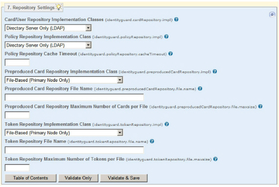

|
IdentityGuard Server 12.0 Administration Guide |
|
IdentityGuard Server 12.0 Administration Guide |
When you first install Entrust IdentityGuard, you have one repository, either a database or an LDAP directory. Use the Properties Editor to change any of the default settings, or to configure Entrust IdentityGuard to use both a database and an LDAP directory. When you use both a database and an LDAP directory, you must set one as the default.
To use both a database and an LDAP directory
1. Start the Entrust IdentityGuard Properties Editor. (See Logging in and out of the Properties Editor.)
2. On the Table of Contents, click Repository Settings.
The repository properties appear with default settings based on choices you made during installation.
3. In the Card/User Repository Implementation Classes drop-down list, select either:
● Database (Default) and Directory Server
● Directory Server (Default) and Database
The default determines where Entrust IdentityGuard stores user data when no repository is specified. You can choose where to store policy data, and you can also move policy to another repository later using the system set -policyRepository command in the Master user shell. For details and command syntax, see the Entrust IdentityGuard Master User Shell Command Reference.
If your selection in the Card/User Repository Implementation Classes drop-down list includes a database, the database maps to the one configured as the default on the JDBC Database Settings pane. If your selection in the drop-down list includes a directory, this directory maps to the one configured as the default on the LDAP Directory Server Settings pane.

4. In the Policy Repository Implementation Class drop-down list, select whether you want policy stored in the database or in the LDAP directory. This must be the repository specified as the default.
The policy repository stores Entrust IdentityGuard policy settings, group and role definitions, license information, and the IP blacklist.
5. Optional. Set a value in the Policy Repository Cache Timeout field. This sets the amount of time that a policy can be cached before the repository is checked for new policy definitions. The default is 30 seconds.
6. You can set the card and token repository properties now or wait until later. Either way, it is better to set up your final repository configuration before you start using the repository. (For details, see Configuring token and grid card repositories.)
7. After you set the types of repositories to use, you must provide the configuration details.
● For an LDAP repository, see Configuring an LDAP directory .
● For a database repository, see Configuring a database.
8. After configuring the repositories in the Properties Editor, assign the repositories to groups. See Create a group.
9. After your repositories and groups are set up and configured, you have choices to make when you create users. Each user you create, whether administrator or ordinary user, must be assigned to a group and to a repository. See Creating users.
Note: You may decide to create users in one repository and administrators in another repository, and the repositories can be of different types. For instance, you may decide to create all administrator in an LDAP repository and all users in a database repository. In this case, assign the administrators to one group (see Step 8 above), and the users to another group and repository as your organizational plan dictates.